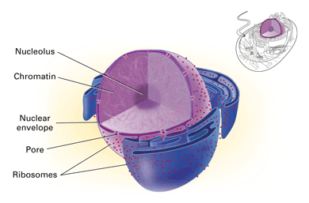
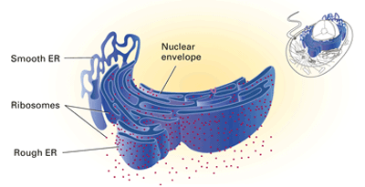
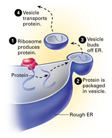
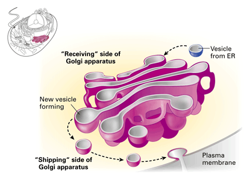
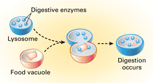
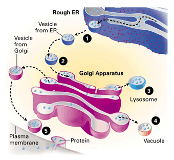

Objectives
- Identify the role of the nucleus in a cell.
- Describe how the functions of ribosomes, the endoplasmic reticulum, and the Golgi apparatus are related.
- Distinguish between the functions of vacuoles and lysosomes.
- Summarize the path of cellular products through membranes.
Key Terms
Just as a factory has a number of different departments and equipment specialized for specific jobs, a cell is similarly specialized. If you think of a cell as a factory, then the nucleus is its executive boardroom. The top managers are the DNA molecules that direct almost all the business of the cell. The other organelles are the "departments" that carry out the instructions of the executive board. They build, package, transport, export, and even recycle products of the cell.
Structure and Function of the Nucleus
You read in Concept 6.1 that the nucleus of a eukaryotic cell contains most of the cell's DNA. The information stored in the DNA directs the activities of the cell. This DNA is attached to certain proteins, forming long fibers called chromatin. Most of the time, the chromatin looks like a tangled mess to anybody examining it with a microscope. But you will read in Chapter 9 that chromatin becomes much more organized when cells reproduce. A pair of membranes called the nuclear envelope surrounds the nucleus (Figure 6-18). Substances made in the nucleus move into the cell's cytoplasm through tiny holes, or pores, in the nuclear envelope. These substances include molecules that carry out the instructions from the DNA of the nucleus. In addition to the chromatin, the nucleus contains a ball-like mass of fibers and granules called the nucleolus (plural, nucleoli). The nucleolus contains the parts that make up organelles called ribosomes.
|  |
Figure 6-18
A cell's nucleus contains DNA—information-rich molecules that direct cell activities. |
Ribosomes
The DNA in the nucleus contains instructions for making proteins. Proteins are constructed in a cell by the ribosomes. These organelles work as protein "assembly lines" in the cellular factory. Ribosomes themselves are clusters of proteins and nucleic acids assembled from components made in the nucleolus. In the classroom-cell scale model, a ribosome would be about the size of a marble. Some ribosomes are bound to the outer surface of a membrane network within the cytoplasm (Figure 6-19). These ribosomes make the proteins found in membranes, as well as other proteins that are exported by the cell. Other ribosomes are suspended in the cytoplasm. The suspended ribosomes make enzymes and other proteins that remain in the cytoplasm.
|  |
Figure 6-19
A ribosome is either suspended in the cytoplasm or temporarily attached to the rough endoplasmic reticulum (ER). Though different in structure and function, the two types of ER form a continuous maze of membranes throughout a cell. The ER is also connected to the nuclear envelope. |
The Endoplasmic Reticulum
Within the cytoplasm of a cell is an extensive network of membranes called the endoplasmic reticulum (ER). You could think of the ER as one of the main manufacturing and transportation facilities in the cell factory. The ER produces an enormous variety of molecules. It is a maze of membranes, arranged as tubes and sacs that separate the inside of the ER from the surrounding cytoplasm (Figure 6-19). There are two distinct regions: rough ER and smooth ER. These two regions are physically connected, but they differ in structure and function.
Rough ER The rough ER gets its name from the bound ribosomes that dot the outside of the ER membrane. These ribosomes produce proteins that are inserted right into (or through) the ER membrane. Ribosomes bound to the ER also produce proteins that are packaged in vesicles by the ER and later exported, or secreted, by the cell (Figure 6-20). Cells that secrete a lot of protein—such as the cells of your salivary glands that secrete enzymes into your mouth—are especially rich in rough ER.
Smooth ER This part of the ER lacks the ribosomes that cover the rough ER. A number of different enzymes built into the smooth ER membrane enable the organelle to perform many functions. One function is to build lipid molecules. For example, cells in the ovaries and testes that produce sex hormones contain an especially large amount of smooth ER.
|  |
Figure 6-20
Some proteins are made by ribosomes (the red structure) on the rough ER and packaged in vesicles. After further processing in other parts of the cell, these proteins will eventually move to other organelles or to the plasma membrane. |
The Golgi Apparatus
Some products that are made in the ER travel in vesicles to the Golgi apparatus, an organelle that modifies, stores, and routes proteins and other chemical products to their next destinations. The membranes of the Golgi apparatus are arranged as a series of flattened sacs that might remind you of a stack of pita bread. A cell may contain anywhere from just a few of these stacks to hundreds. In the classroom-cell scale model, a Golgi stack is about the size of a bass drum. This organelle is like the factory's processing and shipping center all in one. One side of a stack serves as a "receiving dock" for vesicles transported from the ER (Figure 6-21). Enzymes in the Golgi apparatus refine and modify the ER products by altering their chemical structure. From the "shipping" side of a stack, the finished products can be moved in vesicles to other locations. Some of these vesicles travel to specific targets within the cell. Others export cellular products by fusing with the plasma membrane and releasing the products outside the cell by the process of exocytosis.

|
Figure 6-21
Golgi stacks receive, modify, and dispatch finished products. |
Vacuoles
The cytoplasm also contains large, membrane-bound sacs called vacuoles (VAK yoo ohlz). Many vacuoles store undigested nutrients. One type of vacuole, called a contractile vacuole, is found in some single-celled freshwater organisms. The contractile vacuole pumps out excess water that diffuses into the cell.
Many plant cells have a large central vacuole. It stores chemicals such as salts and contributes to plant growth by absorbing water and causing cells to expand. Central vacuoles in the cells of flower petals may contain colorful pigments that attract pollinating insects. In leaf cells, central vacuoles may contain poisons that protect against plant-eating animals.
Lysosomes
Membrane-bound sacs called lysosomes contain digestive enzymes that can break down such macromolecules as proteins, nucleic acids, and polysaccharides (Figure 6-23). Lysosomes have several functions. They fuse with incoming food vacuoles and expose the nutrients to enzymes that digest them, thereby nourishing the cell. Lysosomes also function like safety officers when they help destroy harmful bacteria. In certain cells—for example, your white blood cells—lysosomes release enzymes into vacuoles that contain trapped bacteria and break down the bacterial cell walls. Similarly, lysosomes serve as recycling centers for damaged organelles. Without harming the cell, a lysosome can engulf and digest another organelle. This makes molecules available for the construction of new organelles.
|  |
Figure 6-23
Lysosomes contain digestive enzymes that break down food for cell use. |
Membrane Pathways in a Cell
Follow the pathway of activity in Figure 6-24 to see how some of a cell's organelles function together. Vesicles bud from one organelle (1) and fuse with another (2), transferring membranes as well as products. The arrows show some of the pathways cell products follow on their journey through the cell (3 and 4). You may notice that the internal side of a vesicle membrane can eventually turn up as part of the outward face of the plasma membrane at the cell's surface (5). Exocytosis has turned the vesicle inside out! Membranes are constantly being transferred throughout the cell. An ER product can eventually exit the cell without ever crossing a membrane.
|  |
Figure 6-24
Products made in the ER move through membrane pathways in a cell. |
Concept Check 6.4
1. In what way does the nucleus direct the activities of a cell?
2. Trace the path of a protein from the time it is produced by a ribosome on the ER until it reaches its destination.
3. How are undigested nutrients in a vacuole made available to a cell?